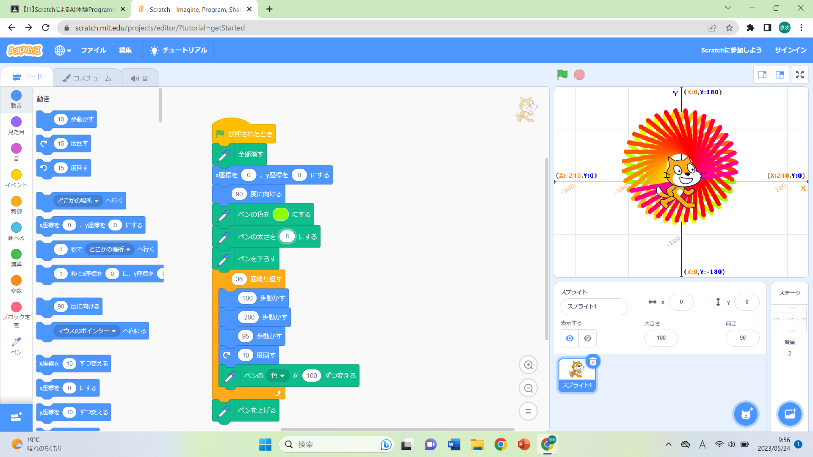
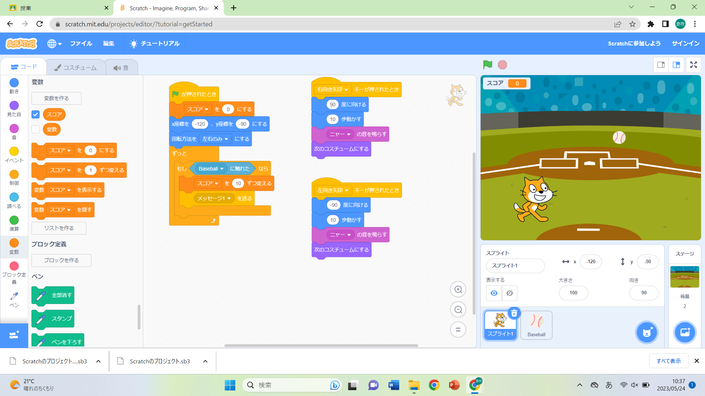

1-1 サイエンスアート

1.内容
スクラッチを使って線を書くプログラムを作成した。まず、フラッグが押されるとペンがすべて消え、ネコが座標(0,0)に移動し、90度に向くようにした。そうすることで、前に描かれたペンをすべて消し、ネコが中心に行くようになる。その後、ペンを下ろし、直線を引いていくごとにネコを10度ずつ傾けることで、円のような図形を描いた。直線を引くプログラムは30回繰り返されるようにすることで、ネコがちょうど一周回るようにした。また、ペンの太さは8にし、色は100ずつ変えるようにした。
2.感想
感想を自分で書く。
1-2 ゲーム

1.内容
スクラッチを使ってネコが落ちてくるボールを拾うゲームを作成した。プログラムをネコとボールのそれぞれの場合に分けた。まず、フラッグが押されると表示されているスコアが0になり、ネコは座標(-120,-90)に移動する。また、50％の大きさのボールが上から1から4秒かけて落ちてくるようにした。ボールの出てくるx座標の位置を‐200から200の間の乱数にしたことで落ちてくる位置をランダムにした。そして、ネコがボールに触れたらスコアを10ずつ入れていくようにし、メッセージ1を送るようにプログラムした。このメッセージ1が送られるとボールが消えるようになっている。ネコの回転方法を左右のみにすることでネコが左右以外を向くことを防いだ。右矢印キーが押されるとネコは右に向いて鳴きながら歩いていき、左矢印キーが押されるとネコは左に向いて鳴きながら歩いていく。動くときに10歩ずつネコのコスチュームを変えていくことで実際に歩いているように見えるようにした。
2.感想
かんそうかんそう